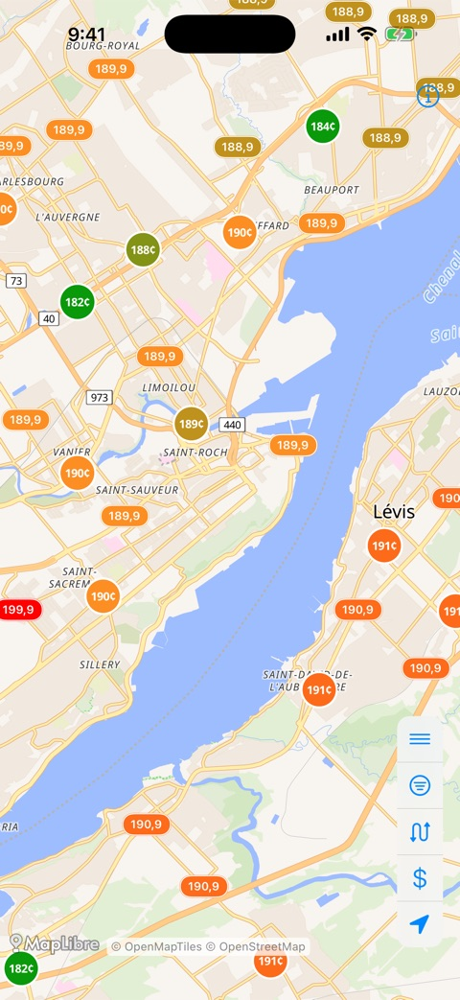
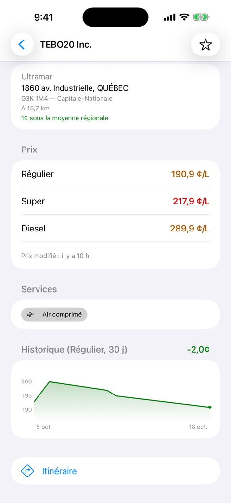
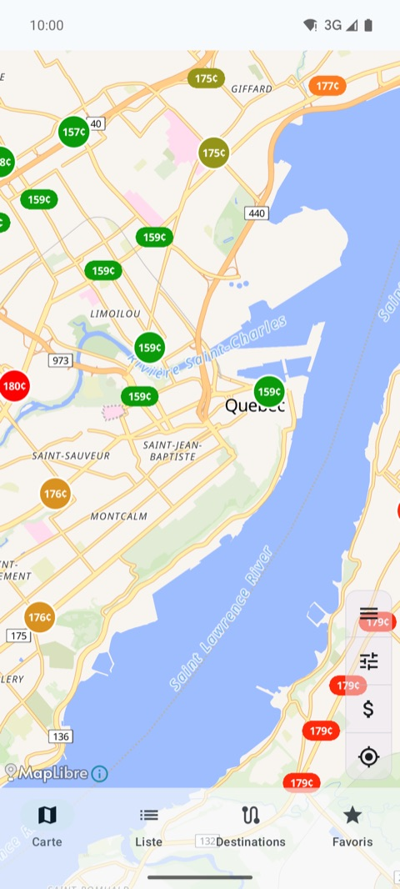
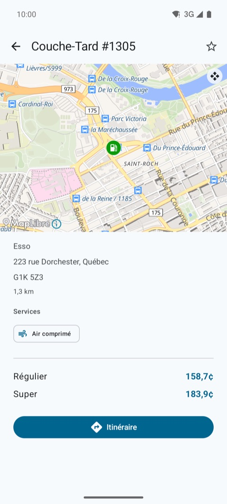
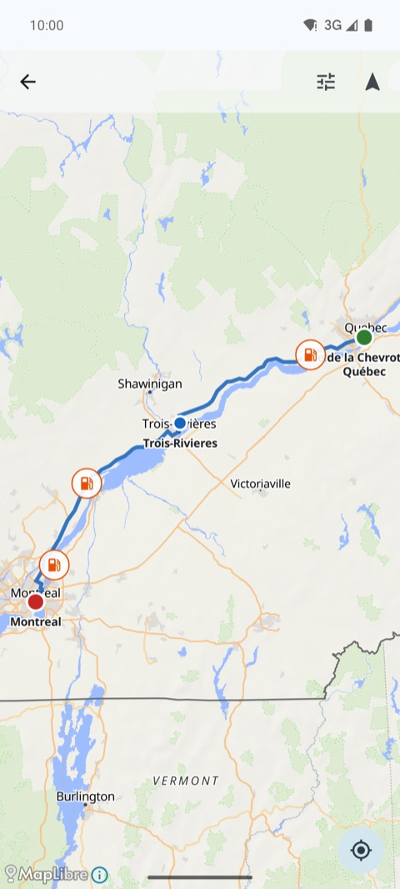

Trop mis à ce prix là? Pas avec Tromi. Les prix d'essence en temps réel et les bornes de recharge VÉ au Québec, sur iPhone, iPad et Android, gratuitement et sans publicité.
iPhone

Les prix sur la carte

Fiche d'une stationTrajet multi-arrêts
Android

Les prix sur la carte

Fiche d'une station

Trajet multi-arrêts
Obtenir l'application
Gratuite, sans publicité et sans compte.
Fonctionnalités
Prix en temps réel pour plus de 2 300 stations au Québec (ordinaire, super, diesel), historique sur 30 jours et moyennes régionales
Plus de 19 000 bornes du Circuit électrique et d'Open Charge Map, filtrées par niveau et type de connecteur
Planificateur de trajet multi-arrêts, avec suggestions en chemin (essence moins chère, bornes, haltes, attraits, parcs); sur Android, passage du trajet à Google Maps ou Waze
Routes touristiques officielles du Québec, horaires des traversiers de la STQ, haltes routières, plus de 4 800 attraits touristiques et 49 parcs
Alertes de prix et widget d'écran d'accueil
CarPlay et Android Auto : stations à proximité et trajet actif sur l'écran de la voiture
Mode clair ou sombre, 5 langues (français, anglais, espagnol, italien, portugais), compatible VoiceOver et TalkBack